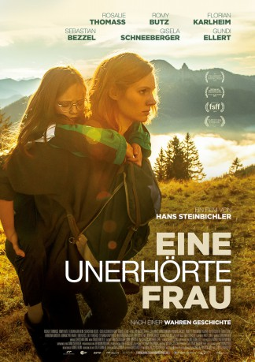
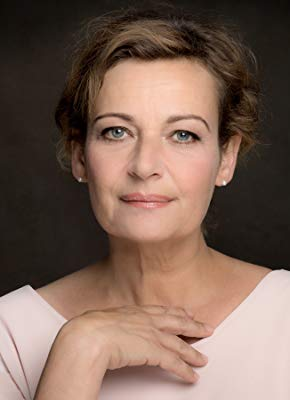

#6099 Eine Unerhörte Frau
 
 IMDB-Wertung: 7.5 / 10
IMDB-Wertung: 7.5 / 10  Metascore: 0
Metascore: 0 
Was, wenn einem niemand glauben will. Schon als Kind keiner so richtig glauben wollte. Hanni, Bäuerin und dreifache Mutter, macht sich Sorgen um ihre jüngste Tochter Magdalena. Das Mädchen ist kleiner als die anderen, empfindlicher, bricht oft, sieht immer schlechter. Bestimmt die Psyche, sagen die Ärzte, die Lehrerin und auch die Familie. Eine Brille mit Fensterglas wird sicher helfen. Aber Hanni ist Magdalenas Mutter und sie spürt, dass eine Brille nichts ändern wird, dass es um mehr geht. Selbst geplagt von einer unerhörten Jugenderinnerung beginnt sie, unbeirrt und unaufhaltsam, um das Leben ihrer Tochter zu kämpfen und setzt dabei nicht nur das Familienglück und ihre Existenz aufs Spiel, sondern schreckt am Ende auch vor der bayerischen Justiz nicht zurück.
Jahr: 2016
Dauer: 88 Minuten
FSK: 12
Land: Deutschland Studio: Wild Bunch GermanyTonspuren:
Untertitel:
Auflösung: 720p (1280x720) Größe: 2109 MB
Genre: Biographie
Regisseur: Hans Steinbichler
Drehbuch: Thomas Meehan
Soundtrack:
Darsteller:
 Rosalie Thomass als Hanni Schwaiger
Rosalie Thomass als Hanni Schwaiger- Benedikt Hösl als Peter
- Kathrin Anna Stahl als Wirtin Tilly
- Romy Butz als Magdalena Schwaiger
- Sebastian Bezzel als Wigg
- Gundi Ellert als Barbara
-  Lilly Forgach als Fr. Dr. Schinnerl
- Andreas Giebel als Pförtner Huber
- Norman Hacker als Dr. Bergmann
- Johannes Herrschmann als Richter 2
- Karolina Horster als Barbara
- André Jung als Richter 1
- Florian Karlheim als Seppp Schwaiger
- Arthur Klemt als Neurologe
- Sylvana Krappatsch als Fr. Dr. Espach
- Thomas Kress als Lois
- Annette Paulmann als Lehrerin Fr. Hecht
- Gisela Schneeberger als Erni Schwaiger
- Adrian Spielbauer als Fritz
- Agathe Taffertshofer als Dr. Becker
Datei: X:\2016(N-Z)\Unerhörte Frau, Eine (2016, FSK12, 1280x720).mkv seit 01.05.2017
Festplatte: HD 2016(A-Z)
 Es gibt insgesamt 182 Filme in der Gruppe '2016(N-Z)'
Es gibt insgesamt 182 Filme in der Gruppe '2016(N-Z)'